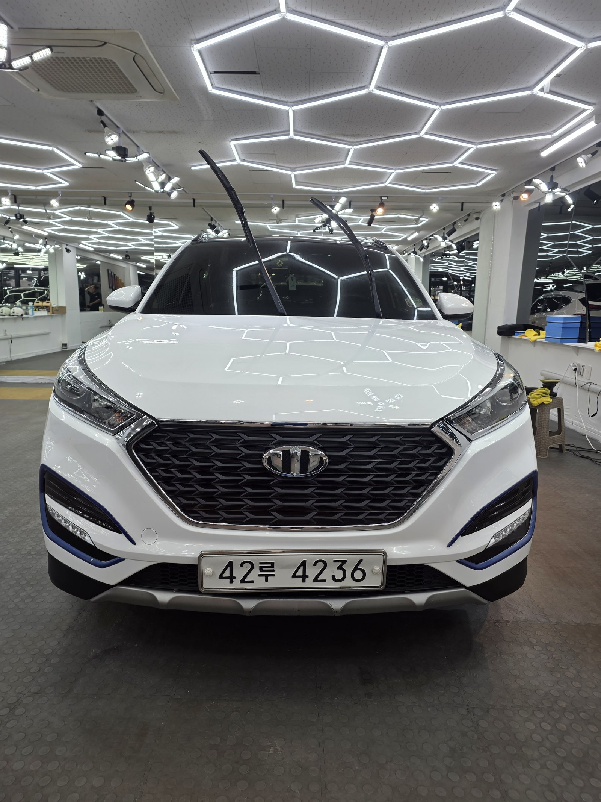
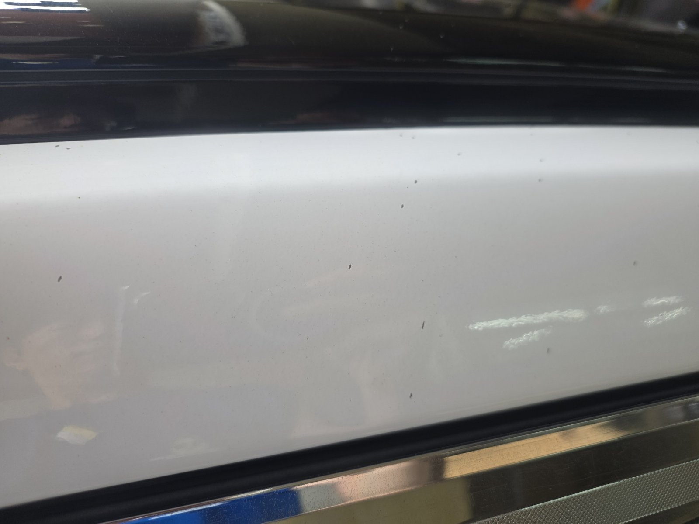
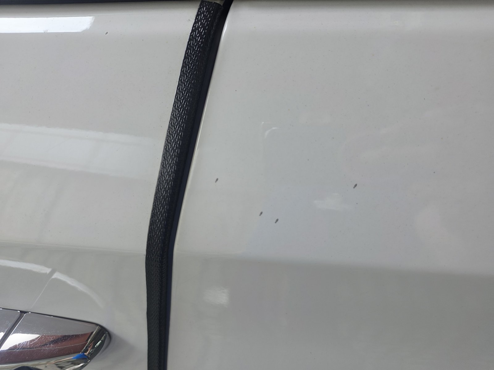
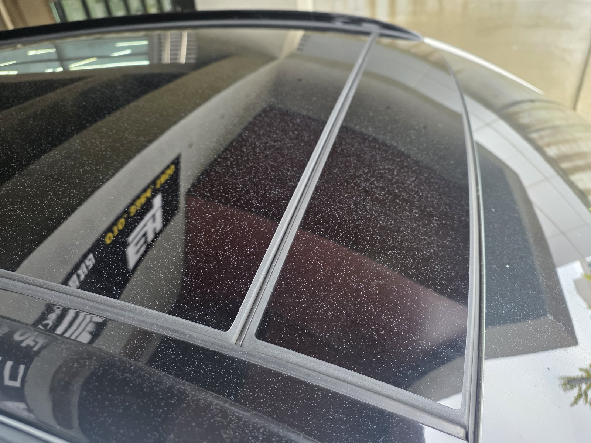
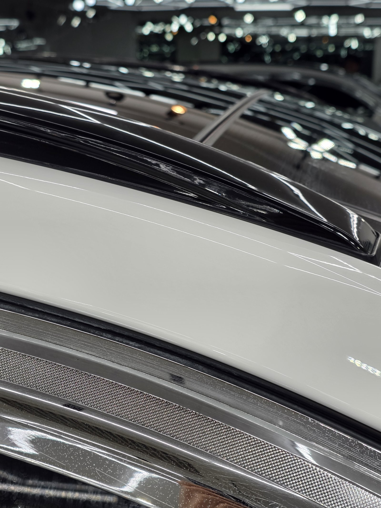
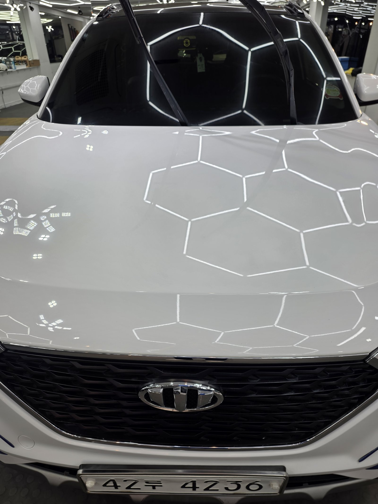
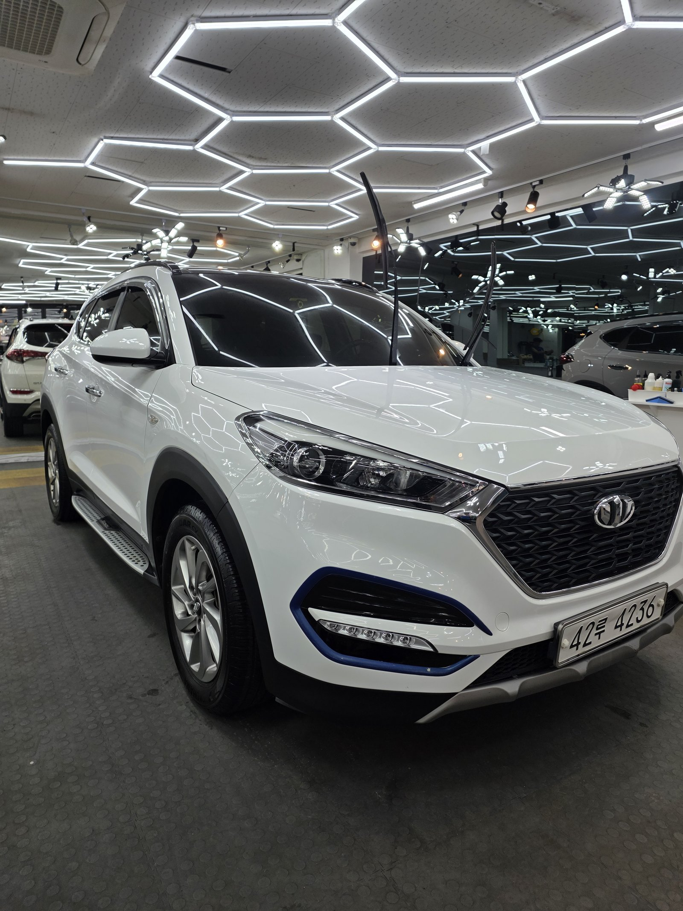
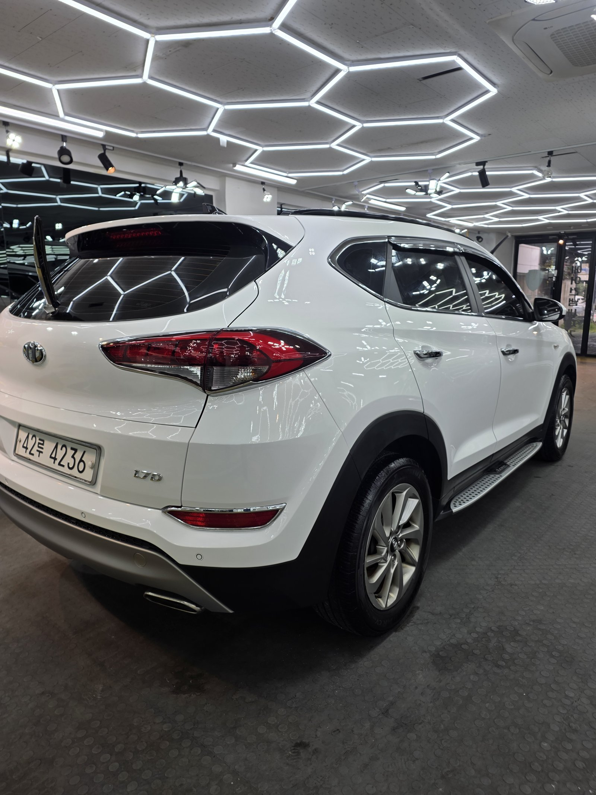
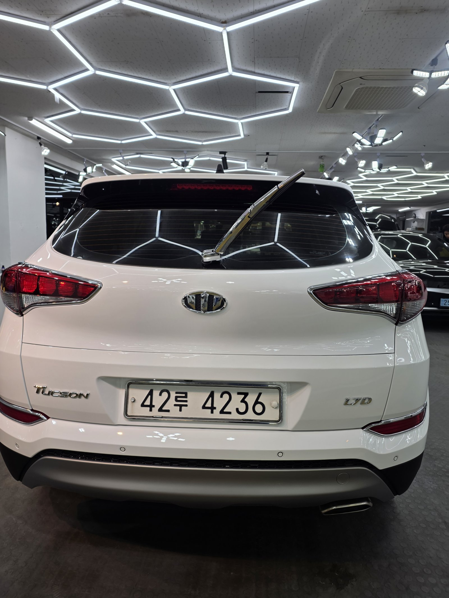

현대 투싼, 백색입니다.
후드와 루프, 필러 라인을 손으로 쓸어보니 까끌거림이 바로 잡혔습니다.
페인트 날림입니다.

흰색차는 왜 페인트 날림을 늦게 발견하나
색 대비가 없어서입니다.
검정차는 하얀 도료 입자가 앉으면 바로 티가 납니다. 흰색은 반대입니다. 밝은 도료가 밝은 도장 위에 앉으니 눈으로는 거의 구분이 안 됩니다. 그래서 몇 주씩 모르고 타시다가 뒤늦게 오시는 경우가 많습니다.
눈이 못 찾을 때는 손이 찾습니다.

작업 전 루프 몰딩 클로즈업. 표면 전체에 미세한 알갱이가 앉아 있습니다
루프 몰딩 라인을 클로즈업하면 도장면 전체에 미세한 알갱이가 고르게 내려앉은 게 보입니다.
이 정도로 넓게, 고르게 앉았다는 건 도장 작업이나 공사 현장에서 날아온 도료가 바람을 타고 퍼졌다는 뜻입니다. 특정 부위만 묻는 낙하물 오염과는 패턴이 다릅니다.

도어 하단부. 낮은 위치까지 입자가 고르게 퍼져 있습니다
이번 작업은 보험처리로 진행했습니다
차주분이 뭘 잘못해서 생긴 손상이 아닙니다.
주변 도장 작업이나 공사에서 날아온 도료라 원인을 제공한 쪽이 있습니다. 그래서 이번 투싼도 보험처리로 진행했습니다.
차주분이 하실 일은 피해 상태를 사진으로 남기고 견적을 받는 것까지입니다. 흰색차는 육안으로 티가 안 나서 "이걸로 보험이 되나" 걱정하시는데, 손으로 짚은 촉감과 클로즈업 사진이 있으면 됩니다.
부산 광택, 페인트 날림은 어떤 순서로 잡나
연마부터 들어가지 않습니다.
굳은 입자가 얹힌 채로 패드를 대면 그 입자가 연마재가 되어 도장을 긁습니다. 없던 스크래치를 만들고 도장은 도장대로 더 깎여나갑니다.
① 디테일링 세차와 철분 제거로 표면 오염부터 걷어냅니다.
② 점토와 전용 약품으로 굳은 도료 입자를 떼어냅니다.
③ 광택으로 남은 미세 자국을 정리합니다.
투싼은 후드와 루프처럼 넓고 평평한 면적이 넓은 SUV입니다. 넓은 면일수록 입자를 떼어낸 자리가 얼룩덜룩하게 남기 쉬워서, 패널 전체를 균일한 압력으로 다시 잡아주는 게 중요합니다.
기술자의 팁
도어 웨더스트립과 무광 몰딩에는 광택 패드를 대면 안 됩니다. 그 자리만 광이 나버려서 오히려 더 티가 납니다. 도장면·유리·무광 트림은 각각 다른 방법으로 나눠서 처리해야 마감이 균일합니다.

작업 후, 헥사곤 조명 패턴으로 표면 검수. 왜곡 없이 곧게 이어집니다
마감 후에는 헥사곤 패턴 조명을 비춰 표면을 검수합니다.
패턴이 끊기거나 휘어지는 지점이 있으면 아직 입자나 자국이 남아있다는 신호입니다. 이 투싼은 패턴이 왜곡 없이 곧게 이어져, 후드부터 도어까지 표면이 고르게 정리됐다는 걸 확인했습니다.

루프 라인도 걸리는 것 없이 매끈하게 정리됐습니다
마감은 듀얼코팅으로
입자를 떼어낸 도장면은 오염이 다시 붙기 쉬운 상태입니다.
그래서 G-PRO로 경도를 올리고 그 위에 G-TOP으로 발수·방오를 얹는 듀얼코팅으로 마감했습니다. G-PRO가 스크래치 내성을, G-TOP이 오염이 표면에 자리 잡는 것 자체를 줄여줍니다.
흰색차는 특히 오염이 눈에 잘 띄는 색입니다. 방오성을 담당하는 G-TOP이 얹혀 있으면 이후 세차 부담이 확실히 줄어듭니다. 코팅제는 제가 직접 개발·제조한 것으로 시공했습니다.




자주 묻는 질문
Q. 흰색차인데 페인트 날림이 눈에 잘 안 보입니다. 어떻게 확인하나요?
A. 손으로 확인하는 게 가장 정확합니다. 비닐봉지를 손에 씌우고 도장면을 쓸어보면 눈으로 안 보이던 까끌거림이 그대로 잡힙니다. 이번 투싼도 후드와 루프, 필러 부위를 손으로 짚어가며 입자 밀도를 확인했습니다.
Q. 페인트 날림 피해, 보험처리 되나요?
A. 됩니다. 이번 투싼도 보험처리로 진행했습니다. 도장 작업이나 공사 현장에서 날린 도료가 남의 차에 앉은 피해이므로, 원인을 제공한 쪽의 배상책임 보험으로 처리되는 경우가 일반적입니다.
Q. 제거 후 도장면이 얇아지지 않나요?
A. 순서를 지키면 최소화됩니다. 굳은 입자를 점토와 전용 약품으로 먼저 떼어낸 뒤 광택은 남은 자국만큼만 잡습니다. 입자가 올라온 상태에서 곧바로 연마하면 그 입자가 연마재처럼 도장을 긁고 지나가 훨씬 많이 깎이게 됩니다.
Q. 쉴드광택 위치와 예약은 어떻게 하나요?
A. 부산 남구 유엔로220 1F 쉴드광택입니다. 예약·상담은 010-3384-1850, 대표 최한중이 직접 상담하고 책임 시공합니다.
흰색차라 안 보인다고 없는 게 아닙니다.
제품을 직접 만드는 사람이 직접 작업합니다.
부산에서 페인트 날림 제거와 광택을 고민 중이시면 편하게 연락 주십시오. 보험처리 건도 그대로 진행 가능합니다.
어떤 차를 타냐보다 어떻게 타냐가 중요합니다~!
시공 중에는 전화를 받지 못할 때가 많습니다.
카카오톡으로 차종과 원하시는 시공을 남겨주시면 확인 후 답변드립니다.
쉴드광택 · 부산 남구 유엔로220 1F · 대표 최한중